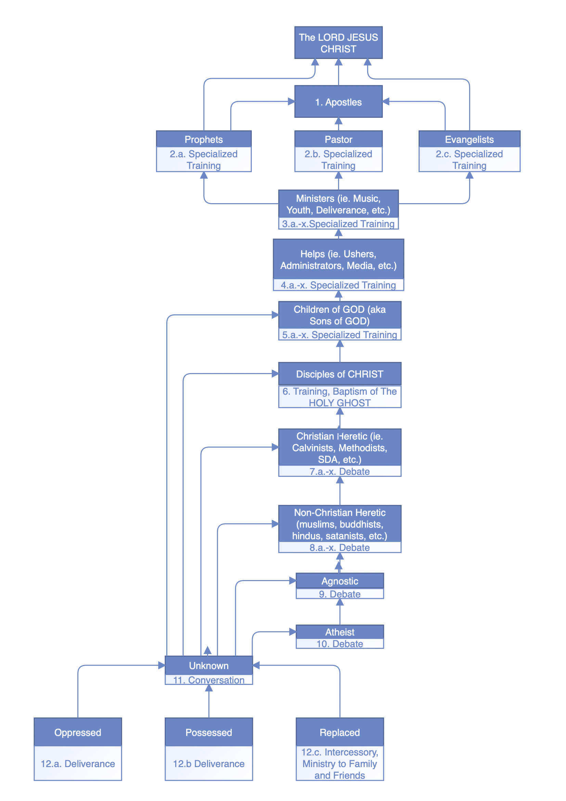

Witness
Level 1
Has received the ministry. “A witness of Baptizing in Water.”
Every arrow points up. Wherever a person stands, there is a ministry for that level that carries them one step nearer to the Lord Jesus Christ, and every ministry is mastered in seven levels, from receiving it yourself to instructing others in it.
Each level of the chart names the people who stand there and the ministry that serves them: conversation, debate, deliverance, training. Beneath each one are the courses and the practical training the school provides for it.
The head of every level. Apostles, Prophets, Pastors, and Evangelists all answer upward to Him, and no rung of the ladder is an end in itself.
Sent to establish and oversee churches, and to carry the work where there is none.
Ministers set apart to one of the three offices, each with its own specialized training, and each answering to the Apostles.
Believers who carry a ministry of their own within the church and are trained for it.
Those who serve the church in the work that lets every other ministry happen.
Believers who have received the Holy Ghost and are learning to do the works every believer is sent to do.
Those who have believed and been baptized, and are being trained and baptized in the Holy Ghost. This is where the Disciple diploma begins.
Those who name the Lord Jesus Christ but hold a teaching that Scripture does not. The ministry here is debate.
Those who hold another religion. The ministry here is debate.
Those who say God cannot be known. The ministry here is debate.
Those who say there is no God. The ministry here is debate.
Someone whose standing is not yet known. A conversation finds it out, and from here an arrow leads up to whichever level the conversation reveals — Atheist, Agnostic, Heretic, or Disciple.
Those who cannot yet come to the conversation on their own. Deliverance brings the oppressed and the possessed up to the conversation; for the replaced, the ministry is intercession and ministry to their family and friends.
Every activity of practical training — Healing the Sick, Baptizing in Water, Preaching, Debating an Atheist, and each of the others — is mastered the same way: seven levels, taken in order, each one reported to the Bishop and approved by him. Each level carries a title.
You receive the ministry yourself — you are the one taught, baptized, healed, prayed for, or delivered — and you can bear witness to what was done for you.
You receive live training in the ministry from an approved instructor: what it is, why the Church does it, and how it is done well.
You witness the ministry carried out by an approved instructor in a real setting, and reflect on what you saw.
You minister it yourself, with an approved instructor instructing you as you go.
You minister it on your own while an approved witness looks on to confirm your competency.
You train someone else in the ministry, with an approved instructor instructing you as you train.
You train someone else in the ministry while an approved witness looks on to confirm your competency to instruct.
Has received the ministry. “A witness of Baptizing in Water.”
Trained in it, has witnessed it, and ministers it under instruction. “Disciple of Healing the Sick.”
Ministers it on his own, confirmed competent, and trains others under instruction. “Minister of Preaching.”
Trains others in it, confirmed competent to instruct. “Instructor of Deliverance.”
| Diploma | Practical training | Level of mastery required in every activity |
|---|---|---|
| Disciple | Level One | Level 4 — Disciple of each activity |
| Evangelist | Level Two | Level 5 — Minister of each activity |
| Pastor | Level Two | Level 7 — Instructor of each activity |
| Prophet | Through the Pastor diploma | Level 7, as for the Pastor diploma |
| Bishop | Level Three | Level 7 — Instructor of each activity |
Each level is reported and approved on your progress page, and the title you hold in each activity is shown there.
The way up, drawn as one chart: every level, the ministry for it, and the arrows that lead upward to the Lord Jesus Christ.
